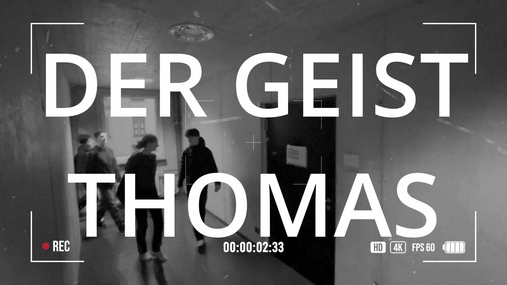
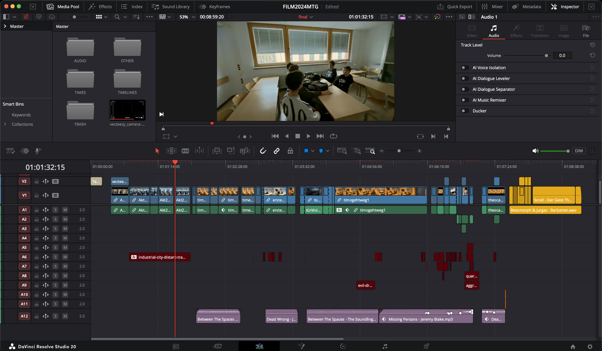
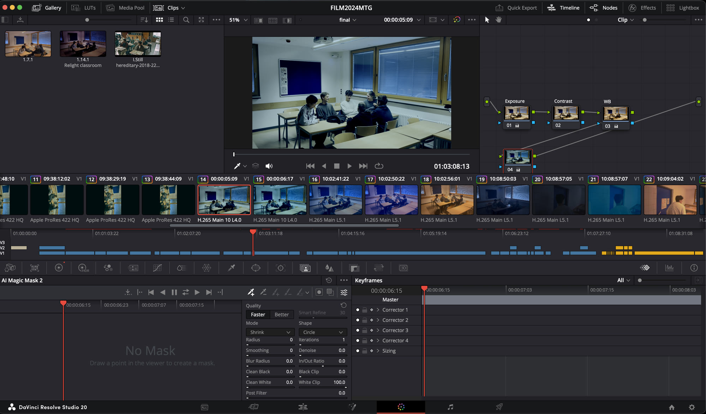

Film / Post-production
Der Geist Thomas
My first serious film project: an eight-minute school horror film rebuilt with classmates after our first attempt failed and about 24 hours remained.
- Role
- Camera · editing · colour correction · sound
- Timeline
- December 2024 · 48h challenge
- Team
- 8 classmates
- Tools
- iPhone 13 · Blackmagic Camera · DaVinci Resolve
- Result
- 8-min short film

We stopped the first attempt instead of pretending it was working.
Several classmates were absent, and the original idea was not coming together. We abandoned it and restarted with about 24 hours left, building a new horror story with the team members and school locations still available.
It was my first substantial, time-pressured collaboration on a film. The reset made the real task clear: agree on something we could finish, divide the work and keep making decisions while the deadline moved closer.
I worked primarily as a camera operator, shooting on an iPhone 13 with the Blackmagic Camera app. In DaVinci Resolve, I then handled much of the post-production: shaping the edit, correcting colour and doing some of the sound work.
The shoot contained many mistakes, so post-production was less about adding polish than finding the clearest version of the film inside inconsistent material.

Exposure and white balance were inconsistent between shots. I corrected them clip by clip so the footage would sit together more convincingly. There was little conventional colour grading and no VFX; the work was mainly repair.
That repair had a limit. Editing and colour correction could reduce distracting differences, but they could not remove the quality limits of the original capture.

I learned to restart earlier when an idea is failing, make roles explicit and prioritise the decisions that the audience will actually notice. I also learned that monitoring exposure and white balance during the shoot is far more valuable than trying to rescue every mismatch afterwards.
If I made the film now, I would test the camera setup before shooting, review footage while there was still time to repeat it and plan the edit around coverage we knew we had. I would keep the willingness to abandon a failing plan, regroup and finish together.